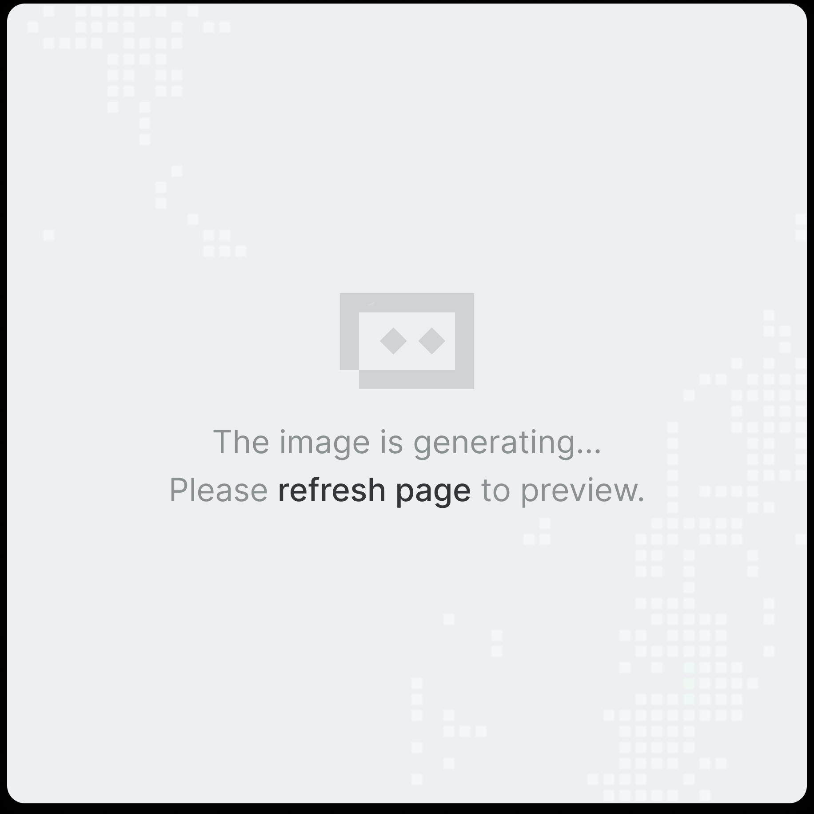

📌 任务流
请选择或新建会话
在左侧会话列表中选择

智能体桥接控制台 · 知识库 · 工作流 · 计划 · 设置
日常对话与任务默认使用的模型
所有 AI 调用（除明确指定）会使用此组合
控制默认生成行为
选择服务商 → 填写 Base URL → 添加模型 → 输入 API 密钥
内置服务商的密钥从
~/.config/agent-canvas/secrets.env 读取（只读遮罩）。自定义服务商的 API
密钥保存在服务端配置文件中，请确保 data 目录权限安全。
用于知识库 RAG 检索后的内容生成
RAG 检索后生成答案时使用的模型
用于知识库向量检索（必须配置才能启用语义搜索）
将知识库文本转换为向量，支持 OpenAI / 通义千问 / 智谱 / Ollama 等兼容接口
密度、动画、语言（主题固定为 Indigo Modern）
新建任务的默认行为
心跳 / 长轮询参数（修改后下次启动生效）
将 skill 安装到智能体环境，AI 即可连接本 bridge
日志级别、保留策略、清理
LOG_LEVEL 环境变量覆盖（需重启）data 目录概览
下列操作不可撤销，请谨慎
自动回复、消息去重、连接参数
当某个微信用户 N 分钟 没有发新任务时，自动发送一条提醒。可选发送今日数据摘要、最近任务总结或两者结合。默认 关闭，需用户显式开启。
满足下列全部条件时，发送一条提醒
只在工作时间内提醒，休息时间静默（跨天支持）
选择要发送的内容类型（可多选）
最近一次检查、发送、冷却情况
仅管理员可操作
系统中所有用户账号
| 用户名 | 显示名 | 角色 | 状态 | 创建时间 | 上次登录 | 操作 |
|---|---|---|---|---|---|---|
| 加载中... | ||||||
登录会话与角色信息
仅当前登录用户可修改
本地访问（127.0.0.1 / localhost / 192.168.x.x /
10.x.x.x）默认自动放行。远程访问需登录。如需修改白名单或 JWT 过期时间，请编辑
~/.config/agent-canvas/secrets.env 并重启服务。
运行时信息
iLink Bot 连接信息